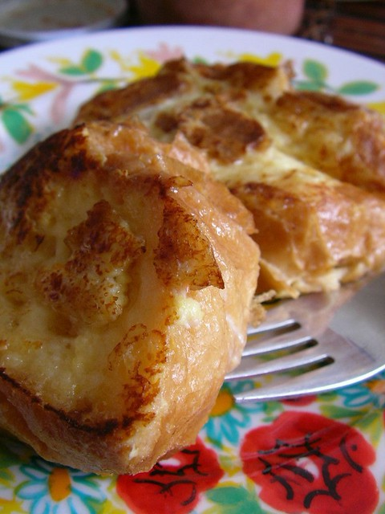

French Toast

Description
I discovered the magic of French toast from a cookbook when I was about ten years old - I'd get up early every Saturday morning to make myself some.
This recipe is great as it's also pretty healthy, so no reason to be guilty over indulgence.
Ingredients
- 1 teaspoon butter
- 1/4 cup milk
- splash of vanilla extract
- pinch of ground cinnamon
- 2 slices bread (white sourdough is best)
- 2 eggs
Steps
- Melt the butter in a frying pan over medium-high heat.
- Whisk the eggs.
- Combine the eggs, milk, vanilla and cinnamon in a shallow dish.
- Dip the slices of bread in the mixture until completely coated.
- Cook for 1-2 minutes on each side, until golden and crisp.
- Enjoy!